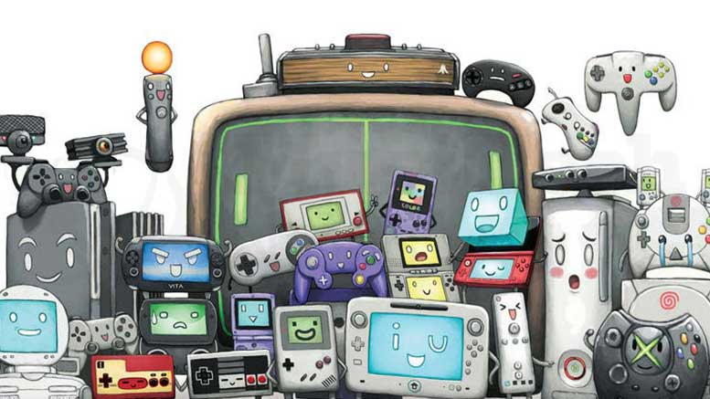
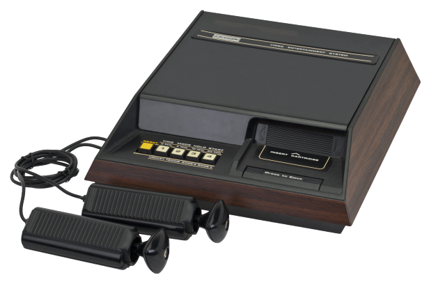
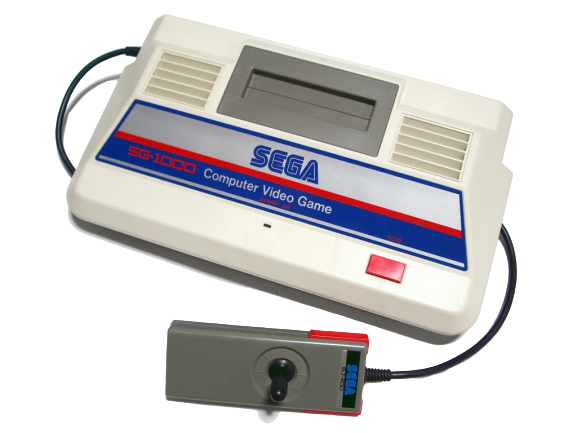
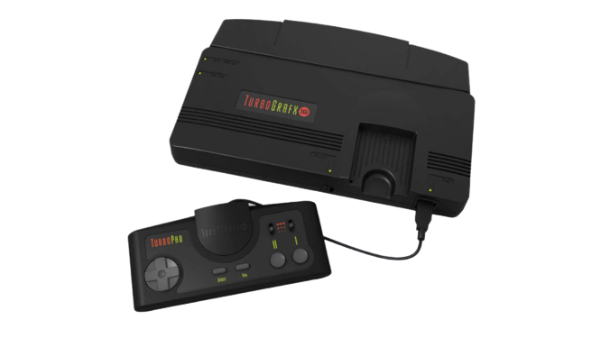
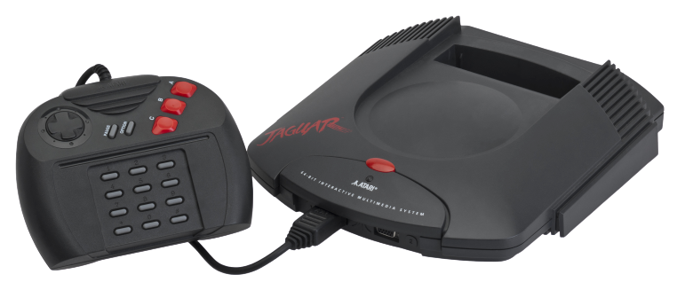

Gaming History
Today, video games make up a $100 billion global industry, and nearly two-thirds of American homes have household members who play video games regularly. And it’s really no wonder: Video games have been around for decades and span the gamut of platforms, from arcade systems, to home consoles, to handheld consoles and mobile devices. They’re also often at the forefront of computer technology.
-

First Generation
The Magnavox Odyssey never caught on with the public, due largely to the limited functionality of its primitive technology. By the middle of the 1970s, however, the ball-and-paddle craze in the arcade had ignited public interest in video games and continuing advances in integrated circuits had resulted in large-scale integration (LSI) microchips cheap enough to be incorporated into a consumer product.
-

second generation
After the collapse of the dedicated console market in 1978, focus in the home shifted to the new programmable systems, in which game data was stored on ROM-based cartridges. Fairchild semiconductor struck first in this market with the Channel F, but after losing millions in the digital watch business, the company took a conservative approach to the programmable console market and kept production runs of the system low.
-

Third generation
Whilst a broken gaming industry in the US took several local businesses to bankruptcy and practically ended retail interest in video gaming products, an 8-bit third generation of video game consoles started in Japan as early as 1983 with the release of both Nintendo's Family Computer ("Famicom") and Sega's SG-1000 on July 15.
-

Fourth generation
A 16-bit generation of video game consoles starts in the late 1980s. The TurboGrafx-16, named the PC Engine in Europe and Japan, debuted in 1987 as the first commercial 16-bit game system. It had a large following in Japan, but, did poorly in North America and Europe because of its limited library of games and because of excessive distribution restrictions imposed by Hudson Soft. Sega's Mega Drive/Genesis sold well worldwide early on after its debut in 1988.
-

Fifth generation
In 1993, Atari re-entered the home console market with the introduction of the Atari Jaguar. Also in 1993, The 3DO Company released the 3DO Interactive Multiplayer, which, though highly advertised and promoted, failed to catch up to the sales of the Jaguar, due to its high price tag. Both consoles had very low sales and few quality games, eventually leading to their demise.
-

Sixth generation
In the sixth generation of video game consoles, Sega exited the hardware market, Nintendo fell behind, Sony solidified its lead in the industry, and Microsoft developed their first gaming console. The generation opened with the launch of the Sega Dreamcast in 1998. As the first console with a built-in modem for Internet support and online play, it was initially successful, but sales and popularity declined rapidly.
▲